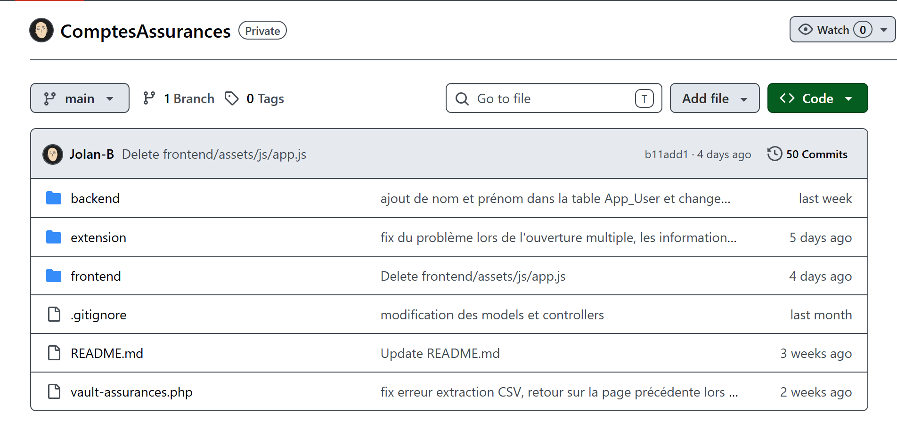

Présentation et évaluation de savoir-faire de suivi de projet
Cette partie permet de présenter et évaluer les savoir-faire de suivi de projet ...
Travailler avec un outil de gestion de version : GitHub

Savoir-faire élémentaire : Structurer le développement d'une application web et coder intelligemment .

Trace 15 : Repository Github de l'applicationBien qu'étant seul au développement de l'application web qui répertorie les accès des différentes assurances de l'entreprise Sily, j'ai décidé de travailler avec un repository github associé (trace 15).
Tout d'abord, cela m'a permis de garder une trace de mon avancement, tout au long du projet, comme une sorte de tableau de bord. Ce qui m'a été très utile pour mes différents comptes rendu (pour lister les tâches effectuées sur le site), pouvoir reprendre d'où j'en étais via les commentaires de mes pushs, afin d'avoir accès aux anciennes versions de mon applications et aussi afin de pouvoir récupérer mon travail peu importe où je me trouve (car l'entreprise ayant plusieurs sites, j'étais ammené à me déplacer).
L'outil étant déjà utilisé lors de mes projets étudiants, ce n'était pas une difficultée d'utiliser Github. Même si sur la trace 15, le dernier commit remonte à 4 jours, je mettais à jour mon travail dessus une à deux fois par jour, car, le projet étant terminé, je me renseigne maintenant sur sa mise en place sur WordPress (d'où le fait que le code ne change pas).